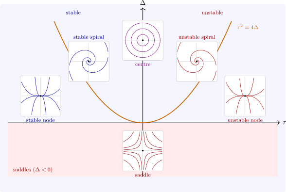

5.4 Planar systems
For \(n = 2\) the classification is complete. Let \(\tau = \tr A\) and \(\Delta = \det A\). The characteristic polynomial is \(\lambda ^2 - \tau \lambda + \Delta \), with eigenvalues \[ \lambda _\pm = \frac {\tau \pm \sqrt {\tau ^2 - 4\Delta }}{2}, \qquad \lambda _+ + \lambda _- = \tau , \qquad \lambda _+\lambda _- = \Delta . \]
Theorem 5.4.1. A real \(2 \times 2\) matrix is similar (by a real change of basis) to exactly one of \[ \begin {bmatrix} \lambda _1 & 0\\ 0 & \lambda _2\end {bmatrix}, \qquad \begin {bmatrix} \lambda & 1\\ 0 & \lambda \end {bmatrix}, \qquad \begin {bmatrix} a & -b\\ b & a\end {bmatrix} \ (b > 0), \] according as its eigenvalues are real and it is diagonalisable, real and equal but it is not diagonalisable, or complex \(a \pm ib\). Accordingly, with \(\Delta \neq 0\), the origin is
- (i)
- a saddle if \(\Delta < 0\): real eigenvalues of opposite signs;
- (ii)
- a node if \(\Delta > 0\) and \(\tau ^2 \geq 4\Delta \): real eigenvalues of the same sign, stable if \(\tau < 0\) and unstable if \(\tau > 0\) (a star or a degenerate node on the parabola \(\tau ^2 = 4\Delta \));
- (iii)
- a focus (spiral) if \(\Delta > 0\), \(\tau ^2 < 4\Delta \) and \(\tau \neq 0\): complex eigenvalues, stable if \(\tau < 0\), unstable if \(\tau > 0\);
- (iv)
- a centre if \(\Delta > 0\) and \(\tau = 0\): purely imaginary eigenvalues, with all orbits closed ellipses.
Proof. If the eigenvalues are real and distinct, the eigenvectors form a basis that diagonalises \(A\). If they are equal and the eigenspace is two-dimensional, \(A = \lambda I\) already; if it is one-dimensional, choose \(v_1\) an eigenvector and \(v_2\) with \((A - \lambda I)v_2 = v_1\), which exists because \((A - \lambda I)^2 = 0\) by Cayley–Hamilton and \(A - \lambda I \neq 0\); in the basis \(v_1, v_2\), \(A\) is the Jordan block. If the eigenvalues are \(a \pm ib\) with eigenvector \(u + iw\), then \(A(u + iw) = (a + ib)(u + iw)\); comparing real and imaginary parts, \(Au = au - bw\) and \(Aw = bu + aw\), so in the basis \(w, u\) the matrix is \(\begin {bmatrix} a & -b\\ b & a\end {bmatrix}\) (and \(u\), \(w\) are independent because \(b \neq 0\)). The cases (i)–(iv) follow from the signs of \(\lambda _+\lambda _- = \Delta \) and \(\lambda _+ + \lambda _- = \tau \) and of the discriminant \(\tau ^2 - 4\Delta \), using Theorem 5.2.1 for the shape of the orbits. □
The geometry of each case follows from the canonical form. At a saddle, solutions approach the origin along the eigenvector of the negative eigenvalue (the stable direction) and leave along that of the positive one (the unstable direction); every other orbit is a hyperbola-like curve that passes by. At a node, all orbits enter or leave the origin, tangent to the eigenvector of the eigenvalue of smaller absolute value, except two that use the other eigenvector. At a focus, orbits spiral, \(r\) changing like \(e^{at}\) while the angle advances at rate \(b\). At a centre, orbits are closed. Figure 8 draws the whole classification on one picture.

Questions on this section
Stuck on something here? Ask below and it stays attached to this topic.